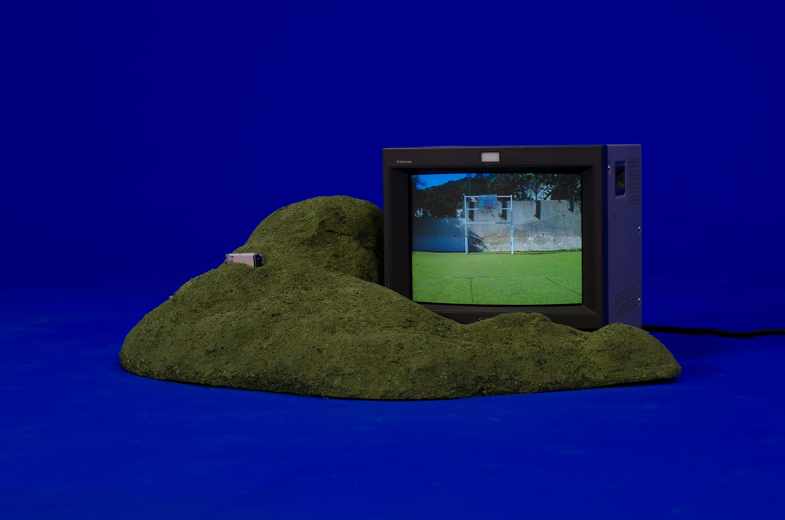
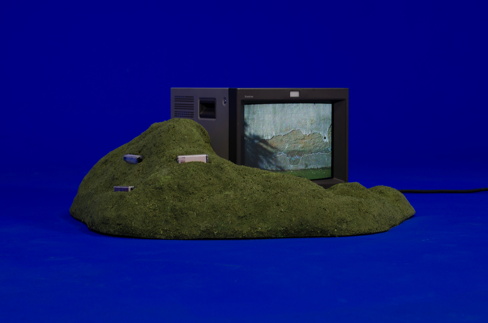
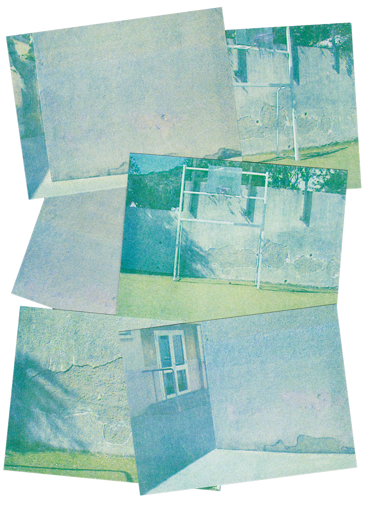

(fig.1)

(fig.2)

(fig.3)

De l’autre côté de la cour se trouve un plateau au gazon synthétique et aux murs qui pèlent. Cet espace est dénué d’arbre et dès la fin avril, nous brûlions sous le soleil corse pendant la récréation en rêvant d’ombre. Sur le mur du fond, le crépis vieillissant dessinait les contours d’un arbre dont des nuages semblaient s’échapper (fig.2). Derrière la cage aux buts, nous nous adossions sous cet arbre factice en feignant d’y trouver la fraicheur qu’offre la pénombre. Si cette histoire avait été vraie, je pourrais même raconter que nous grattions les contours, laissant apparaitre le béton, pour rendre l’arbre plus réaliste.